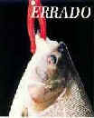
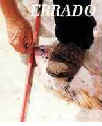
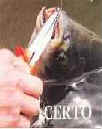
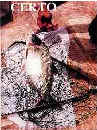
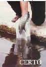
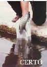

Pesqueiro Terapia
- Como todos os pescadores de Tilípia sabem, é de suma importância "Cevar" ( De preferência utilizando ração de coelho) o local da pesca.
- A Tilápia é um peixe muito sensível ao barulho. É bom evitar movimentos bruscos.
- Pescar sentado e com a vara fixa no suporte. Com linha fina e de preferência sem chumbo.
- Procure se informar no pesqueiro, onde os peixes costumam se agrupar.
- A massa deve estar bem macia como recomendada no pote. ( No caso de pesca com o molinete, a massa deve estar mais dura, para que não caia na hora do arremesso).
- No caso da existência de "Alevinos"( Peixes menores) , deixar a massa um pouco mais dura afim de dar tempo para que os peixes grande cheguem.
- É recomendado usar anzol nº 16.
- Não é necessário o uso de bóia, caso queira usar, use uma bóia pequena e deixe a isca no fundo.
- Caso a massa for utilizada a fim de pescar outros peixes, deixe a massa mais dura.
- Como os peixes só vêem em preto e branco, procure usar roupas escuras e/ou de cor neutra para que eles não percebam seus movimentos.
A maneira correta para manusear peixes em pesque-pague

1. Utilize anzóis sem farpas.

2. Evite alicates pega-peixes.

3. Use passaguá para retirá-los da água e nunca pise sobre o peixe para imobolizá-lo.

4. Sempre que possível, retire os anzóis e libere dentro da água. Isso previne a maioria dos prejuizos.

5. Não solte peixes que engolirem anzóis, que tiveram os olhos perfurados ou que estejam com sangramento.

6. Caso haja necessidade de pô-los no chão, forre o piso com um pano úmido.

7. Use sempre pano úmido para segurá-los e retirar anzóis.
6. Caso haja necessidade de pô-los no chão, forre o piso com um pano úmido.

7. Use sempre pano úmido para segurá-los e retirar anzóis.
BOA PESCARIA !
Copyright © 2009, Pesqueiro Terapia - Todos os direitos reservados
Desenvolvido por Sibelius Seraphini
Desenvolvido por Sibelius Seraphini